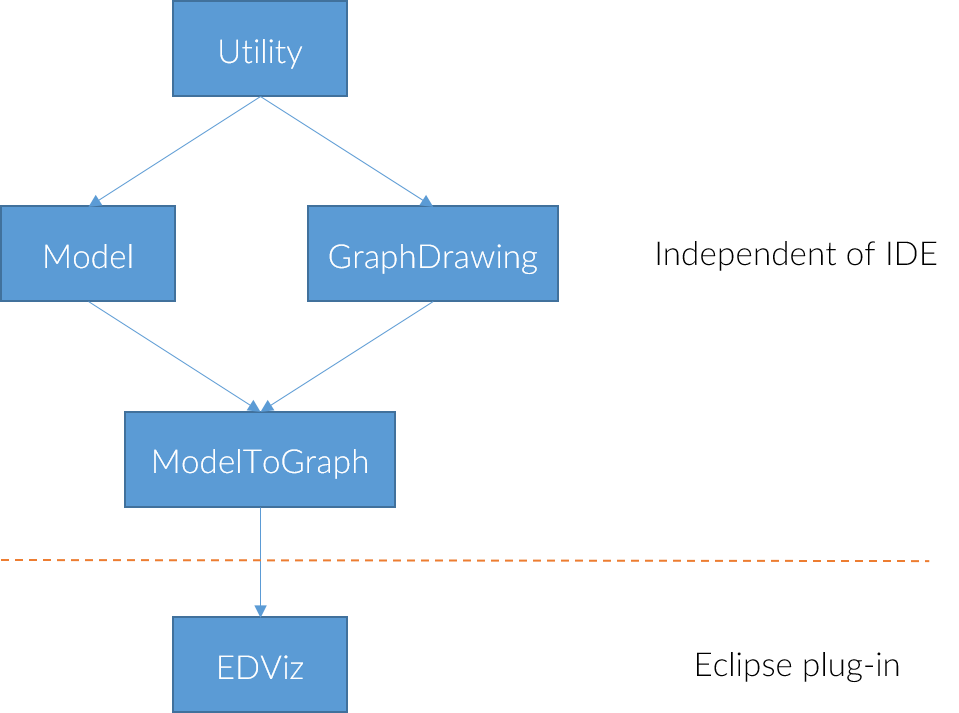

Overview
The picture below shows the different modules which make up the entire tool. The EDViz module can only be developed using Eclipse, as it is an Eclipse plug-in. All other modules are independent of the IDE they are developed in. Splitting the system up into these modules aims to create multiple reusable and self-contained parts.
Modules
Utility
The Utility module contains utility code which is used in many parts of the system. All packages in the module start with org.eth.cyril.util. Most importantly it contains any configuration code. The configuration is used everywhere in the system to configure the look and the behavior of the system. You probably don't need to do any development within this module, but will find parts of it quite useful
Graph Drawing
The GraphDrawing module contains any code which concerns the graph drawing code. All packages in the module start with org.eth.cyril.graphdrawing. The graph package is the most important package here. The edge package contains any code which has to do with standard edges. The easiest way to create graphs is to use one of the builders given in the GraphBuilder interface. This interface allows building graphs from the objects to be contained in their nodes, instead of having to work with nodes and edges directly.
The cached builder will cache the object-to-node mapping over multiple graphs, and therefore reuse nodes when objects appear again. This is useful to keep using the same nodes. The basic builder will not cache this mapping, but clear everything when a new graph is started. The following example code shows the usual way to create a graph:
GraphBuilder builder = ... //Must always start a new graph first. builder.startNewGraph(); //First, add the nodes. builder.buildNode(o1); builder.buildNode(o2); //Then, build the edges. Edges with a non-existing node are silently ignored. builder.buildEdge(o1, o2); builder.buildEdge(o1, o3); //Ignored! //Finally, build the graph. Before building the next graph, make sure to reset again. Graph g = builder.buildGraph();
The algorithms package contains various graph-based algorithms. Finally, the drawing package contains all graph layout code. To add a new graph layout algorithm, extend the GraphDrawingAlgorithm class and implement the missing abstract method. Each graph layout algorithm comes with its own configuration object.
The standard graph layout algorithm used in the system is the ConstrainedSugiyamaLayoutAlgorithm. It uses the CycleRemovingOrderingDecider to order the nodes in each level, and the QuadraticProgrammingXPositionCalculator to calculate the x-position of all its nodes.
Laying out a graph is then quite simple. The following example code shows the usual way to use a graph layout algorithm:
Graph graph = ...
GraphDrawingAlgorithm<?> algorithm = ...
//Get the configuration and update it
EmptyConfiguration config = algorithm.defaultConfiguration();
modifyConfiguration(config);
//Draw the graph
DrawingFrame frame = new DrawingFrame(500.0, 500.0);
frame = algorithm.determinePositions(graph, frame, config);
//The graph's nodes now contain the updated positions
for (Node node: graph.getNodes()) {
System.out.println(node.getPosition());
}
Another important package is the graphdrawer package. The GraphDrawer interface contains the functionality implemented by every graph drawing area. This allows to have a consistent interface for mouse listeners to attach to, while still having different graph drawing areas based on a browser, SWT or Swing. The mouse events and the listener interfaces to be implemented can be found in the package events package. These listeners can then be added to any graph drawer instance.
Model
The Model module contains any code which concerns the model. All packages in the module start with org.eth.cyril.model. The model package contains the main model code. The HeapContent models the heap, containing all variables and reachable values. It also contains the blacklist, which hides some nodes in the final graph. The different possible types of values and variables are located in the package nodes package. These are not directly instantiable. To create instances of these objects, use the factory given in the ModelFactories class. You may also supply your own factory here, to use your own implementations globally within the project. All values and variables are created with this factory.
The following example code shows how the model objects are typically created, and how a heap content instance may be initialized:
ModelFactory factory = ModelFactory.getFactory();
//Don't forget to set the value string!
ObjectValue ov = factory.objectValue(0, "MyType");
ov.setValueString("Hello");
PrimitiveValue pv = factory.primitiveValue(1, "int");
pv.setValueString("1");
NullValue nv = factory.nullValue(2);
nv.setValueString("null");
//Can only set the fields after creating the ObjectValue.
//Always set fields and parents!
ov.addField("f1", pv);
pv.addParent("f1", ov);
ov.addField("f2", nv);
nv.addParent("f2", ov);
//A variable has a value, which must be set.
Variable var = factory.variable("var", "MyType");
var.setValue(ov);
//Reachable values are automatically found.
HeapContent heap = new HeapContent(Collections.singletonList(var), true, "main");;
The constraint language and dsl packages contains code concerning the domain-specific language for specifying ordering constraints, string formats, blacklist rules and abstraction rules. Within the dsl package, there is a DSL.g4 file which contains the ANTLR grammar for the different parts of the domain-specific language. The QueryResolver handles entire queries of the form a.b.c with multiple parts. A Resolver instance then handles a single term of the form a out of a.b.c. All value types, the variable type and heap content in the model implement this interface to allow applying the domain-specific language to them. A ComparisonResolver matches the comparison term as seen in blacklist or abstraction rules, with multiple comparisons separated by a comma. The MatchingResover is used for such comparisons, by allowing to compare to a string. All value types in the model also implement this to compare to their value string. The blacklist package contains all of the code which handles blacklisting.
The abstraction package contains functionality concerning abstraction. The QueryAbstractionHandler handles abstraction by queries as specified in the configuration. To handle abstraction, use an AbstractionManager instance. Such an instance is for example available in the DrawingStepHandler.
The output package then contains functionality concerning the value strings for the values. The main function to use for that is the ValueStringResolverManager's apply method. Such an instance is for example available in the DrawingStepHandler.
The following code shows how to typically apply abstraction and string resolving in order. Note that the order is important, such that the value strings of abstracted values can be set correctly.
AbstractionManager<Value> aManager = ... ValueStringResolverManager sManager = ... HeapContent heap = ... //Apply abstraction first aManager.handleAbstraction(heap, heap); //Apply value string sManager.apply(heap);
ModelToGraph
The ModelToGraph contains code which connects the Model and the GraphDrawing modules together. All packages in the module start with org.eth.cyril.modeltograph. The constraints package contains the constraints which are available for the graph layout algorithm. Of specific interest is the ConstraintResolver class, which resolves the ordering constraints from the configuration to actual constraints usable in the layout algorithm.
The GraphCreator class handles conversion of the heap content to graphs, where the blacklisted values and variables are not part of the graph. The DrawingStepHandler handles all steps in the life cycle of a heap content/graph instance, including abstraction, setting value strings and layout. Listeners can register to receive updates and therefore be notified whenever a new graph is laid out.
By default, the DrawingStepHandler updates the value string resolver, blacklist manager, abstraction manager and layout algorithm constraints based on values from the configuration. In order to change how these are set, the DSLUpdater can be implemented, and the DrawingStepHandler#setUpdater method may be used. The default updater is the DrawingStepHandler instance itself.
EDViz
EDViz contains all Eclipse and Java-specific code, such as the heap analysis code when hitting breakpoints. It also contains various SWT-based GUI components, such as the main graph drawing area. The Activator class is used to start and stop the plug-in. The DebugBackendView starts up and initializes the entire view, including adding all the actions from the actions package to the view and initializing the graph drawer (which by default is a BrowserGraphDrawer instance. The DebugEventSetListener integrates with Eclipse and is notified about any debug events (such as breakpoints being hit).
All bugfixer packages and classes are part of the beta features and contain the automatic code correction tool. The SWT package contains various SWT-based GUI components and utilities. The interactive package contains code for the interactive mode. The mouse listeners for the graph drawer are located in the listeners package. Finally, heap analysis is performed by the classes in the contentprovider package, such as the VisualizationInput and ProgramHeapVisitor classes.